Hotspot Finder
The Hotspot finder tool helps to find the hotspots in a model. A hotspot can be a node, an element or an area in the computational domain with extreme values (maximum or minimum) of a result. Local minima, local maxima or nodes/elements/areas with high gradients can also be considered as hotspots in certain situations. As the definition of hotspots can be situational, various mechanisms to identify hotspots are provided in VCollab Pro. Users can choose the right mechanism based on their understanding of the problem to identify the hotspots.
Hotspot Finder Tool
Click CAE | CAE Settings | Hotspot Finder or Click Hotspot Settings... under the icon 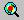 as shown below.
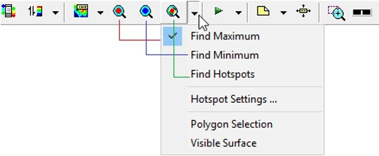
The Hotspot Finder tab opens up as shown below. Select the region in which to Find from the drop down list
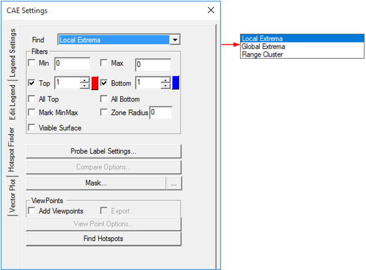
The various options and fields that are available under Hotspot finder are explained below.
- Find: Users can choose from any one option from the drop down list
- Local Extrema : Under this option, VCollab Pro identifies the local maximum or minimum in a node/element within the specified zone radius .
- Global Extrema: Under this option, VCollab Pro identifies the nodes or elements with global maximum or minimum values as the hotspots.
- Range Cluster Finds hotspots in a given cluster defined based on the range. Clusters if min and max are not given, legend's first interval values will be taken as the cluster range.
To know more about Local and Global Extrema, click here.
Hotspot Range (Min & Max): When a range is specified, VCollab Pro filters the nodes whose result values lie outside this range. They are not considered hot spots. Hot spots are searched among nodes whose values satisfy the range limits.
Hotspot Count (Top and Bottom): This option specifies the number of hotspots that need to be generated. Hotspots top and bottom labels are differentiated by label border colors, which are red and blue respectively. Users can change the default colors if needed.
All Top: If the top value is 100 (as an example) and there are multiple IDs with the same value, then hotspot finder considers and displays only one of these IDs if All Top is unchecked. If this option is checked, hotspot finder displays all IDs with the same top values.
All Bottom: This option is similar to the All Top option, except that it considers bottom values.
Mark MinMax: This option highlights the labels of maximum of top labels and minimum of bottom labels. Maximum and Minimum labels are highlighted with text colors of Red and Blue respectively.
Zone Radius: The Zone radius option helps to avoid locating hot spots next to each other. Once a hot spot is found, VCollab skips all the nodes within the specified radius while searching for the next hotspot.
Visible Surface: Displays the visible labels in the current view.
Probe Label Settings: Allows users to select probe type and template and other result attributes.
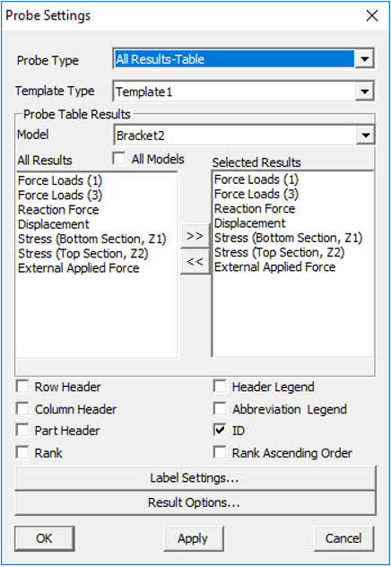
- Probe Type:
- CurrentResult - Derived : current scalar value
- CurrentResult - Full : Displays all components for vector and tensor results.
- All Results - Table : Displays user selected scalar result values.
- All Instances - Table : Displays all instance values in a table.
- All Instances - XYPlot :Displays all instance values as a XYPlot graph.
Template type: This option displays values in a predefined template (format). Header options are meaningful for template 1 when at least one dataset is merged with an existing one.
Model: Selects the model for which results are listed for selection.
All Results: Displays a list of all available results for the selected model. To select a result (for probe labels), click on it and then press >> button. The selected result will get added to the Select Results list.
Selected Results: Displays a list of all the selected results. To deselect a result, click on it and then press << button. The result will be removed from this list and appear under the All Results list. To rearrange the results order in the labels, drag the result and drop where you want to place.
Row Header: To display either dataset name or result/instance name in the first column of the label, check the row header box. Each row header shows the result/instance that corresponds to the CAE result data
Column Header: To display either dataset name or result/instance name in the top of the labels, check the column header box. Each column denotes CAE result data and row denotes the corresponding result/instance name.
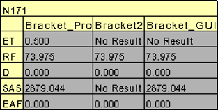
Part Header: Adds annotated part name into the label.
Header legend: Displays acronym of the results as a separate label.
Abbreviation Legend: Displays the legend or abbreviation and its acronym in a table separately. It displays a table for short letters for results used in the labels. It can be moved like other labels.
ID : Displays nodal or element ID in the label.
Rank: Displays rank number based on the hotspot value and number of hotspots found.
Rank Ascending Order: Specifies ranking process to be ascending or descending.
Label Settings: Allows users to format the text and background of the label.
Result Options: Allows users to select and highlight labels based on the result values.
Apply or OK: Apply the modifications.
- Compare Options : This option is visible only when at least one dataset is merged with existing one. It is used to compare results of merged models. Users can select the models to be compared with the base model (current model). By default it generates hotspots/min max labels for the current model.
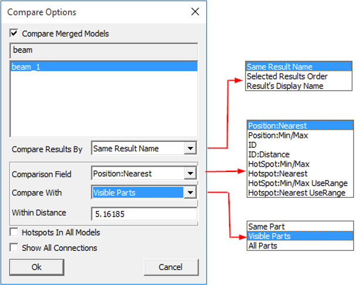
The various fields and options available under the Compare options panel are explained below.
- Compare merged models: Check this option to compare the models. Once this is checked all other comparison options are enabled.
- Selection of Models for comparison: The current CAE model is listed as the base model. Other models are listed and users can select required models to be compared with.
- Compare Results by: Specify the criteria to compare the results.
- Same Result Name - Compares selected results with other models with same result names.
Base Model Model 2 Same Result Result 1
Result 3
Result 5
Result 3
Result 2Result 4Result 7Result 3 is common in both models.
So Result 3 will be compared and displayed by this type.
- Selected Results Order - Compares results of selected models by as per the order of the results.
Base Model Model 2 Result order Result 1 Result 3 Result 1 => Result 3 Result 3 Result 2 Result 3 => Result 2 Result 5 Result 4
Result 7
Result 5 => Result 4
Results Display Name - Compares results by same display names (case sensitive). Ignores the result names for comparison. In the following table display names are specified in braces.
Base Model Model 2 Same Display Name Result 1 (Result 4)
Result 3 (Result 3)
Result 5 (Result 5)
Result 3 (Result 2)
Result 2 (Result 4)
Result 4 (Result 6)
Result 7 (Result 5)
Result 1 (Result 4) => Result 2 (Result 4)
Result 3 (Result 3) => No Result
Result 5 (Result 5) => Result 7 (Result 5)
Comparison Field: The following methods are available to users to compare results.
*Radius refers to the default radius and not the user defined Zone radius
Position : Nearest - Compare one hotspot node with a node from another model based on position
- Get nearest node from the other model with distance < *Radius
- Select this nearest node for comparison.
Position : Min/Max - Compare one hotspot node with a node from another model based on position
- Get all nodes in the other model with distance < *Radius
- From this set of nodes select one node for comparison
- For top hotspot select the node with Max value
- For bottom hotspot select the node with Min value
ID: Compare the hot spot node with a node from the other model having the same id.
ID : Distance - Compare the hot spot node with a node from the other model having the same id
- AND distance < *Radius
Hotspot: Min/Max- Compare the hotspot node with a hot spot node from the other model by:
- Get all hotspot nodes in the other model with distance < *Radius.
- From this set of hotspots select one hot spot for comparison
- For Top hot spot select the hotspot with Max value
- For Bottom hotspot select the hotspot with Min value.
Hotspot: Nearest
Compare the hotspot node with a hotspot node from another model.
- Get all hotspot nodes in the other model with distance < *Radius.
- From this set of hotspots select the nearest hotspot (of same type) for comparison.
Hotspot: Min/Max UseRange
Compare the hotspot node with a hot spot node from another model
- Get all hotspot nodes in another model with distance < Zone radius (user defined).
- From this set of hotspots select one hot spot for comparison.
- For Top hotspot select top hotspot with Max value.
- For Bottom hotspot select bottom hot spot with Min value.
Hotspot: Nearest UseRange
Compare the hotspot node with another hotspot node from the other model
- Get all hotspot nodes in another model with distance < Zone radius (user defined).
- From this set of hotspots select nearest hotspot (of same type) for comparison
Compare With
- Same Part - Compare using the comparison options specified above in the same part of the other model.
- Visible Parts - Compare using the compare options specified above in all visible parts of the other model.
- All Parts - Compare using the compare options specified above in all parts.
Within Distance - Allows users to specify the distance value and hotspots are computed within this range.
Hotspots In All Models: Finds hotspots for each model. Then it appends results from merged models as rows or columns based on the template selected.
Show All Connections: Shows all the connecting lines between the label and its attached positions.
- Mask : This option in the Hotspot finder panel, allows users to mask a set of nodes and elements from the process. Users can mask the nodesets from the hotspot finding process using Node Set manager.
Note: Masking is not supported for Elemental Result.
- Add View Points: When enabled, this option generates viewpoints according to viewpoint options specified. Viewpoints Options button is enabled only when this option is checked.
- Export: This option helps users to export the viewpoints into either VPT file or Microsoft PPT file. While adding the view path, users will be prompted for a file name and file type.
- Viewpoints Options: This option helps users to select either part wise viewpoints or multi view points for a single scene.
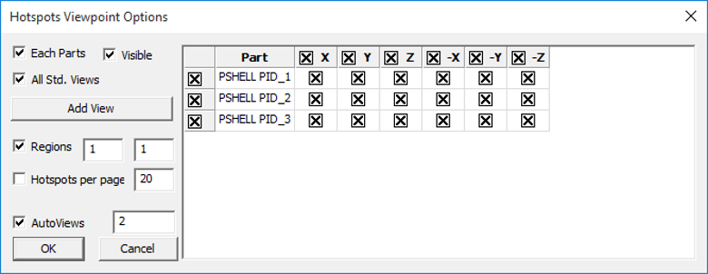
The various fields that are seen in the Viewpoint Options panel are explained below
Each Parts: Enabling this option creates a viewpoint for every part. If top hotspot count is specified as ten, and if the model consists of 5 parts, then the generated view path consists of 5 viewpoints (one per each part) with each viewpoint consisting of ten hot spots in the corresponding part. There will not be any change in view and orientations. In every viewpoint, one part is visible and others are hidden.
Visible: When enabled, this option filters the parts based on its visibility and lists the parts in the list.
All Std. Views: This option will include 6 standard view points (X, Y, Z,-X,-Y and -Z) for each part or current scene based on Each Part option. The viewpoints can be filtered by checking or unchecking the corresponding boxes. options. Users can check or uncheck the entire column or row as well in one shot.
Add View: Add view option adds current camera view or user’s view as an option with standard views in the GUI. Users can check or uncheck if necessary. To update current view, click on the icon. It will set the current camera position as the viewpoint.
Regions: The model area can be split into a number of regions and each region that is displayed focuses on that region’s hotspots. (2,4) means to split the model area into 2 regions horizontally and 4 regions vertically, so the total regions are 2x4=8. 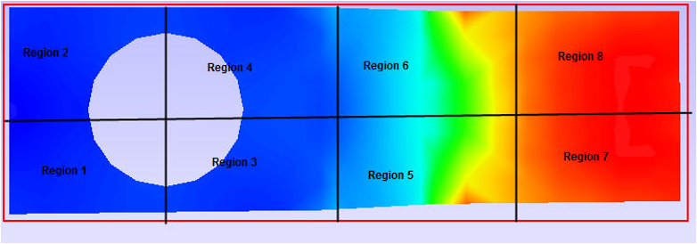
Hotspots per page: Users can specify the number of hotspots per page in the viewpoints. If there are 45 hotspots in the model and 20 are the Hotspots per page specified, then 3 viewpoints will be generated. First and second viewpoints will have 20 hotspots in each and the remaining 5 hotspots will be shown in the third viewpoint.
Note
By default the number of hotspots per page is 20 (max allowed). Users can change this as per requirement.
Auto Views : When selected, this option helps to orient the viewpoint such that the user can view all the hotspots clearly.
The number of auto views specifies how many auto viewpoints should be generated to make all the hotspots visible to the user.
- Find Hotspots: This option in the Hotspot finder panel generates hotspots for a model according to the options specified.
Steps to find hotspots after hotspot settings
Click CAE | Hotspot Finder or click the icon , which enables mouse mode for hotspot finder.
Select a region to find hotspots either by rectangular window or by polygon selection.
If Polygon Selection is off, then selection is done using a rectangular window by default.
E.g. : Rectangular window selection
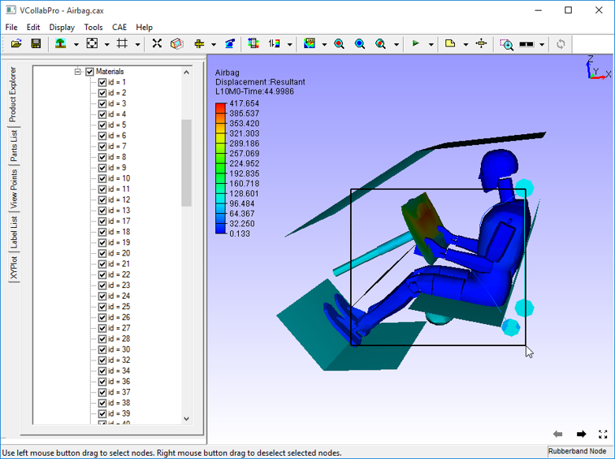
E.g.: Polygon Selection
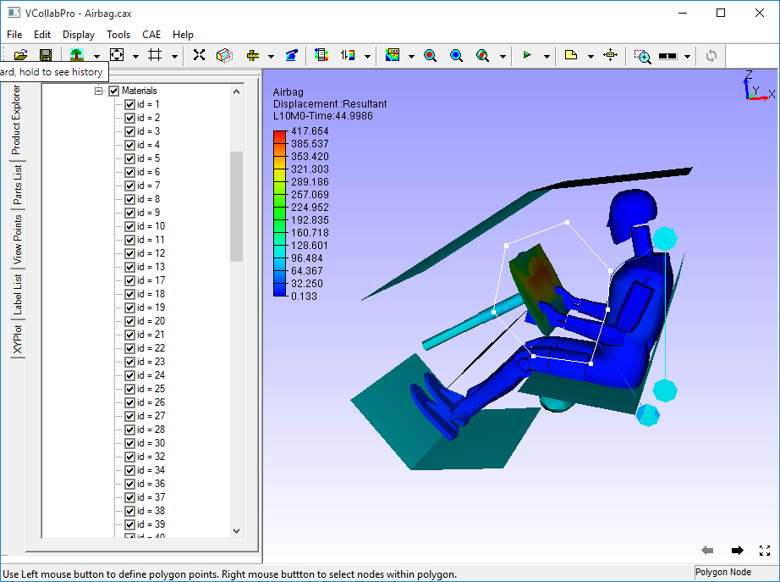
Once the region is selected, hotspot CAE values are displayed as labels as follows.

Hotspot Range Cluster
Cluster based on range.
Example: Consider the following airbag model,
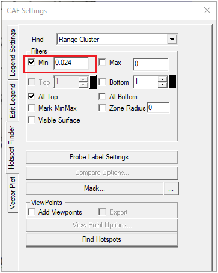
For Top hotspot, range is defined by Filter Min value, ( 0.024 ). To visualize the cluster defined by (> 0.024) , enter the same value in Legend as in the image above. User can see two red clusters. This algorithm finds maximum value for each cluster and shows the labels.
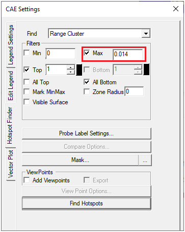
Similarly for Bottom hotspot, range is defined by Filter Max value ( 0.014 ). To visualize the cluster defined by (< 0.014), enter the same value in Legend as in the image above. User can see three blue clusters. This algorithm finds minimum value for each cluster and shows the labels.